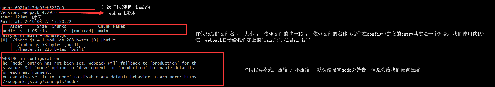

webpack的版本为4
在安装之前我们需要安装node和npm，因为webpack是基于node创造的。
我们可以2种方式安装，一个是全局安装，一个是局部在项目安装。
我们如果选择了全局安装那么，我们就只能运行同一个版本的项目，但是如果是在项目中安装，我们就可以在电脑上运行多个不同版本的webpack
所以推荐第二种方式。
npm install webpack webpack-cli -D
安装成功之后，如果是全局安装是直接webpack index.js
webpack在最早是一个js编译器，但是随着发展，webpack不仅仅能够编译js，png，css等等都可以做到非常棒的打包；
所以webpack应该说是一个模块打包工具；
我们进入packge.json配置private为true，将script清空；
然后我们在根目录上建立index.js，再建立一个header，通过es导入模块的方式引入；
然后可以使用
npx是node提供的一个命令，我们是局部安装，无法使用webpack index.js命令，所以用npx命令可以在本项目中webpack编译index.js
编译成功可以生成出来了一个dist文件夹，下面有一个main.js，这边就是我们打包之后，能够被浏览器阅读的js文件。
webpack团队为了丰富我们使用webpack的赶脚，所以提供了一系默认配置，包括我们在执行编译的时候，会自动生成dist和mainjs，这些都是提供的默认配置；
我们可以自己定义打包文件名称以及编译后的文件名和文件夹名字，需要我们重写webpack.config.js 这个文件名称我们不能改变
const path = require('path') // 引入nodejs函数
module.exports = {
entry: "./index.js",
output:{
filename: "bundle.js",
path: path.resolve(__dirname,'bundle') // 获取文件夹路径
}
}
我们用commonjs模块导出了一个对象，里面有编译的文件，和编译后的目录地址以及设置文件名称；
我们在这里之所以引入path函数，是因为不能写相对路径
我们配置好webpack之后，我们要去package中修改我们的script：
"scripts": {
"boundle":"webpack"
},
我们这边写这个代码的意思就是：我们可以用boundle关键字来取去找webpack在项目中，然后我们又定义了webpack配置：就可以轻松的使用如下命令来打包了：
补充知识点：

下面是关于file-loader的知识点